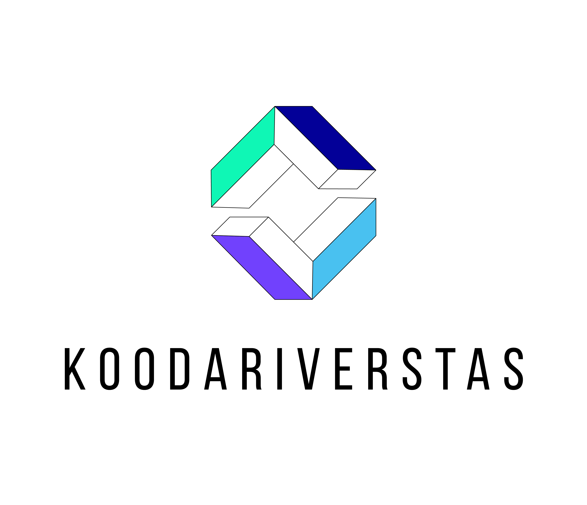

Rules and responsibilities in Koodariverstas

Rules in Koodariverstas
Koodariverstas has a set of standard rules for everyone working in a project through Koodariverstas. These rules are designed to keep the day to day operations running smoothly and protect the people working in and through Koodariverstas.
You should have a clear understanding of these rules before you sign a contract with a company, they will help you understand your rights and commitment required by each party during the workflow.
Note: These rules are considered as general rules, and are therefore subject to change based on individual projects. Some of these rules might change based on the contract written by the employer, Koodariverstas and you. These changes in the rules have to be accepted by each party before officially signing a contract.
Here are the general rules
1. Get to know your position. If the “employer” for the project asks you for extra work that is not covered in the contract, you have the right to refuse. You are not obligated to do anything outside what the written contract states.
2. Do what your contract says. You are expected to complete the work that is laid out in the written contract you have signed. You are contractually obligated to do the work that you have agreed on.
3. Don’t break your NDA. If the company providing a project requires you to sign an NDA (Non-disclosure agreement), you are legally obligated to not share any information to outside parties. In the case an NDA is signed, each party (Including Koodariverstas) will sign their own NDA. Each party is legally responsible for their own NDA.
4. Don’t be afraid to ask questions. If you get the feeling that you don’t understand something or you would like to know something, don’t be afraid to ask. You can freely ask Koodariverstas anything you would like to get clarification on. You should also be comfortable with asking the company that has agreed to lead your project for any help in case you need it.
5. Have fun and learn! We want to provide you with a great opportunity to get to work with real companies in real projects. We encourage you to get the most of your time with us. We want you to be able to confidently take pride in your work and learn as much as possible.
Responsibilities in Koodariverstas
We believe in equal opportunities and equal responsibilities. Every project in Koodariverstas consists of at least three parties, these parties are as follows:
You (The main person behind the implementation of the work),
Koodariverstas (Mediators, Teachers, Specialist personnel from XAMK)
Client (Company that has assigned the project.)
Each party has their own responsibilities that are written in the contract each party signs before any work will begin.
Responsibilities of each party
You
You are expected to work within the limits of the written contract you have agreed on. You are expected to work as a professional for the company whose project you have accepted.
Your responsibility is to finish the project in an acceptable manner. You are responsible for the work you do, and how you portray yourself. It is up to you to be a professional and act like a professional.
You are also expected to keep track of your working hours and communicate with either Koodariverstas or the client.
Koodariverstas
We are responsible for selecting suitable projects, and the candidates for completing the projects. We are also responsible for the possible mediation that might be needed in the case something goes horribly wrong.
We are not obligated to finish unfinished work, but we will mediate and try to find solutions between you and the client.
We are also responsible for your course credits, and recognition of your work in the case the client has a good reason to not credit you for the work you have done.
Koodariverstas consists of teachers and expert personnel from XAMK, and is a project backed and managed by the European Union and XAMK therefore Koodariverstas does not receive financial compensation from the client.
We will also work closely with you and the client when drafting and signing the contracts and we will ensure that you are treated fairly and the clients needs are met.
Client
The client is responsible for the final product they receive from you. They act as the product owners for their project.
This means that the client themselves is responsible for the project in the case something goes horribly wrong. The client has the final say on the completion of the project and how the project is done.
They are also expected to work in coordination with you to give you the resources and guidance you might need during your work.
They are expected to provide a signed recommendation letter and certificate of employment for you if you succeed in your work.
They can only refuse to write a recommendation after all mediation attempts have failed and they have given a good and understandable reason to refuse.
In this case Koodariverstas will write an official recommendation for you signed by XAMK.